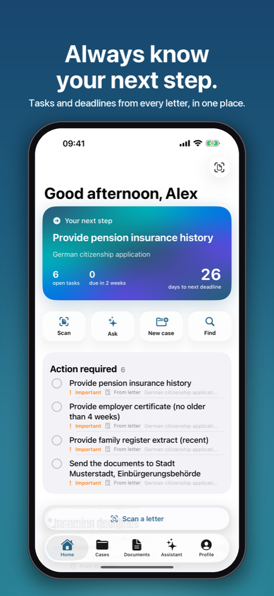
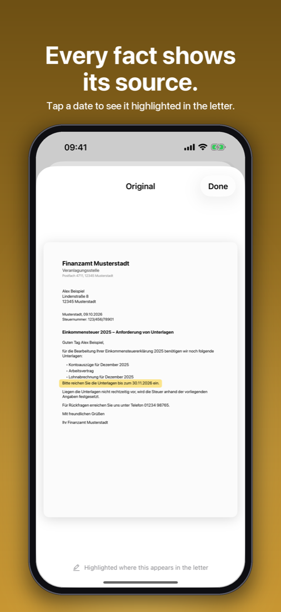
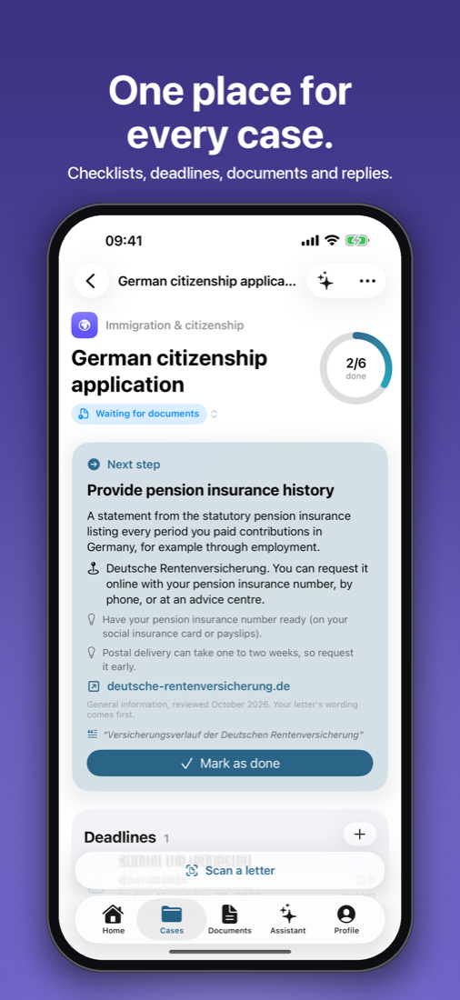

Your life.
Less paperwork.
Scan an official German letter. LifeAdmin explains it in plain English and tells you what to do and by when.



Built to be trusted.
Every fact shows its source.
Tap any date or request to see the exact line in the original letter.
You stay in control.
Tasks and deadlines are only saved after you approve them. LifeAdmin never sends anything for you.
No guessing.
Periods like “within one month of delivery” aren't turned into a date without asking when the letter arrived.
Private by design.
Read on your iPhone.
Text recognition and explanations run on your device. No document goes to an AI provider.
Synced through your iCloud.
Your cases sync between your devices through your own private iCloud. There's no LifeAdmin server.
No ads. No tracking.
No account, no analytics, no third-party SDKs. Export or delete everything at any time.
Everything for one process, in one place.
Cases
Citizenship, residence permits, insurance, taxes, housing: letters, checklist, deadlines and timeline together.
Formal replies
Draft letters in formal German with an English translation. You edit and send them yourself.
Import from anywhere
Scan with the camera or share PDFs and images from Files, Preview, Mail or your scanner app.
LifeAdmin explains paperwork. It isn't legal or tax advice and can't promise how an institution will decide.